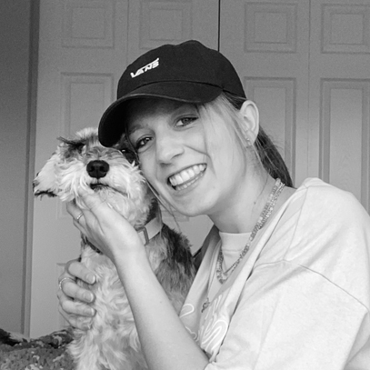
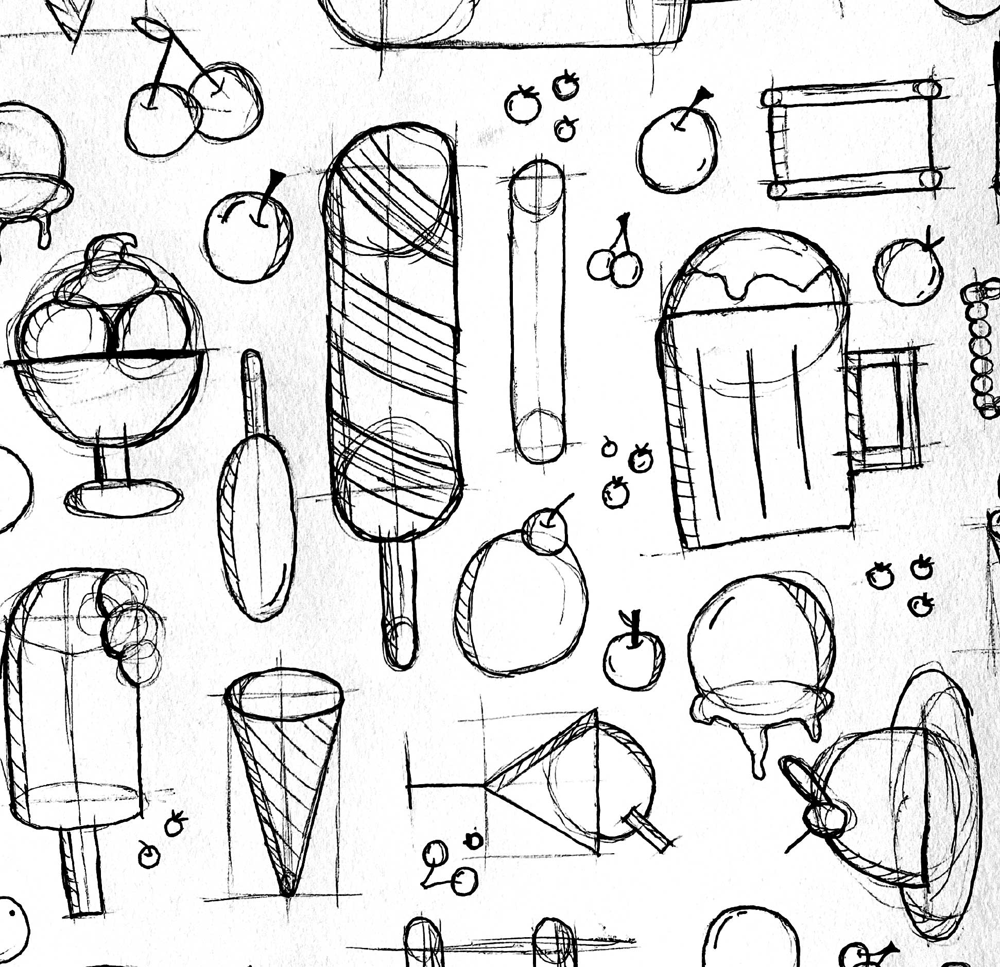

About Me
I am 21 years old and am currently a student. When I first got out of high school I went to university and studied for a year, majoring in Theology. After my first year I realized that I wanted to do something completely different with my life and I ended up in the Graphic Design program at Algonquin. I am an easy-going person and in my free time I like to find new music, spend time with my dog, or play video games. My family is also very important to me, and you can find us playing card games every weekend.

Experience
Currently I am studying my second year of Graphic Design. Before entering the program, I did a lot of non-profit work for the places I volunteered at. This included logos, slides, badges, banners, and more. I had to learn a lot of skills on my own to be able to produce artwork for these organizations. Now that I have had the privilege to be taught Graphic Design at Algonquin, I have a much better grasp on design and a wider scope of design skills. Since being in in the program I have done more non-profit work for the same organizations and have also done a paid project for an event logo.
Contact Info
Email: bry.hillier@gmail.com
Phone: 613-222-3333
Slack: bhillier33